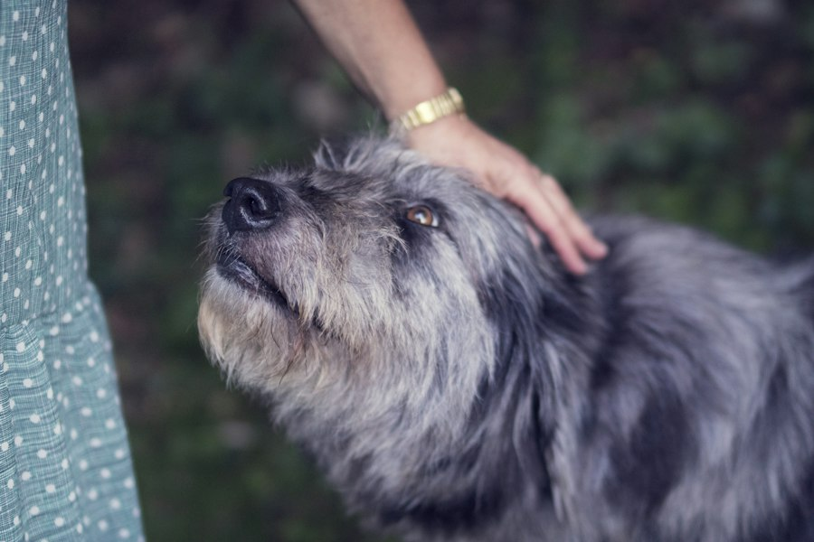

なぜ、この事業をするのか
保護犬の活動は、寄付が集まらない月には医療や飼育が止まってしまうことがあります。老犬の介護も、医療費や介護用品の費用が長く続きます。どちらも、気持ちに頼る単発の募金より、毎月見通しの立つ資金のほうが向いています。
iNU は、犬との暮らしに役立つ商品やサービス、企業の紹介制度を紹介し、そこで生まれた報酬の決まった割合を支援に回します。支援の額は発信が広がるほど積み上がり、毎月の実績をそのまま公開します。

株式会社iNU は、アフィリエイトと企業の紹介制度から生まれる収益で、保護犬活動と老犬介護を支える会社です。
犬と暮らす人の毎日の買い物と紹介を、
保護犬と老犬の支えに変える。
保護犬の活動は、寄付が集まらない月には医療や飼育が止まってしまうことがあります。老犬の介護も、医療費や介護用品の費用が長く続きます。どちらも、気持ちに頼る単発の募金より、毎月見通しの立つ資金のほうが向いています。
iNU は、犬との暮らしに役立つ商品やサービス、企業の紹介制度を紹介し、そこで生まれた報酬の決まった割合を支援に回します。支援の額は発信が広がるほど積み上がり、毎月の実績をそのまま公開します。

保護犬と暮らすAIアバターが、保護犬の現状やシニア犬との暮らし・介護の工夫を X・Instagram で伝えます。AIであることは明記しています。
フード、介護用品、ペット保険、獣医師の相談サービスなど、犬の暮らしに役立つ商品・サービスを紹介し、報酬を得ます。
企業が設けている新規入会者の紹介制度を使い、紹介報酬を支援の資金にします。
収益の50%を、保護団体への資金支援や、保護犬・老犬の医療費・介護用品の費用に充てます。
「収益の○%」と書くときは、何を母数にしているかも書き、毎月その通りに支払います。
報酬が発生する紹介には【PR】を表示します。
AIはアバターと解説まで。保護犬・老犬の写真や支援の記録は実物を使います。
健康や介護に関わる商品は、メーカーの表示の範囲で紹介します。
譲渡・預かりは登録を受けた保護団体や施設にお任せし、私たちは情報発信と資金の面で支えます。
里親さんなど個人の名前や住所は公開しません。